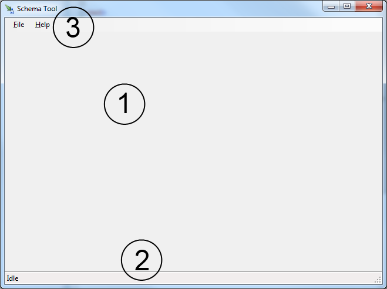
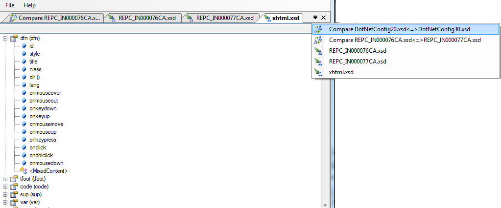
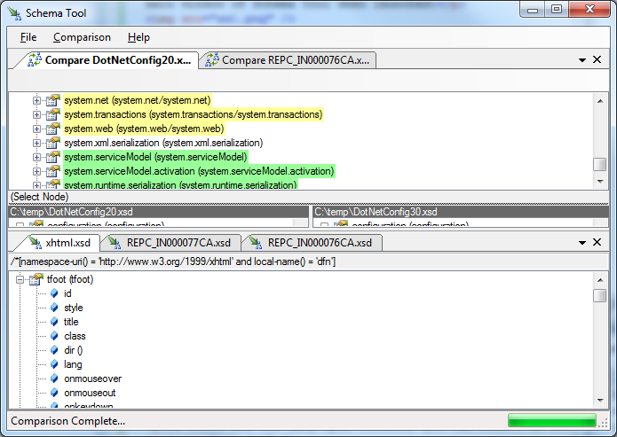

Schema Tool's interface provides lots of flexibility. Users of Microsoft Visual Studio will find the interface very familiar. Illustrated below is the main window of Schema Tool when launched:
The utilities that Schema Tool provides are:
| Compare | Compares two schemas and illustrates the structural changes to root elements | |
| View Schema | Opens a schema and illustrates the structures (starting with the root elements) the schema contains | |
| Schema Copy | Copies a schema and all dependencies. For example, if you copy schema a.xsd and it depends on b.xsd and c.xsd then those schemas are also copied |
The work area is very flexible. Utility windows can be split, moved and docked in any manner that you wish. To move a tool window, simply select the title and drag your mouse, any valid drop area will be hilighted. The figure below shows how this feature can be useful:
If there are too many open windows, you can select an active window using the window list tool:
You may also rearrange the tool windows to better suit your taste:
| Copyright (C) 2010, Mohawk College of Applied Arts and Technology |